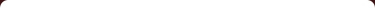

Uma universidade em sintonia com o futuro!!!
No mapa de Minas Gerais, a Pontifícia Universidade Católica está presente em importantes regiões do Estado, através de uma estrutura multicampi composta por mais de uma centena de prédios, que abrigam laboratórios, bibliotecas, museu, canal de TV, oficina de teatro, ensino a distância, salas multimídia, teatros, auditórios, hospitais veterinários, clínicas de fisioterapia, odontologia e psicologia, além de outros equipamentos dotados com modernos recursos tecnológicos e pedagógicos. A comunidade acadêmica da PUC Minas reúne 56.751 estudantes (47.281 na graduação, 8.182 da especialização, 1.097 no mestrado e 191 no doutorado), 2.312 professores e 1.682 funcionários, espalhados pelos seus campi/unidades. São 56 cursos de graduação, 17 programas de mestrado e seis de doutorado, além de 287 cursos de especialização (entre os de aperfeiçoamento e extensão do Prepes, IEC e de ensino a distância). A PUC Minas está presente em Belo Horizonte (Barreiro, Coração Eucarístico, Praça da Liberdade, São Gabriel), Betim, Contagem, Poços de Caldas (Sul), Arcos (Centro-Oeste), Serro (Alto Jequitinhonha) e Guanhães.

A PUC Minas
Uma universidade em sintonia com o futuro!!!
No mapa de Minas Gerais, a Pontifícia Universidade Católica está presente em importantes regiões do Estado, através de uma estrutura multicampi composta por mais de uma centena de prédios, que abrigam laboratórios, bibliotecas, museu, canal de TV, oficina de teatro, ensino a distância, salas multimídia, teatros, auditórios, hospitais veterinários, clínicas de fisioterapia, odontologia e psicologia, além de outros equipamentos dotados com modernos recursos tecnológicos e pedagógicos. A comunidade acadêmica da PUC Minas reúne 56.751 estudantes (47.281 na graduação, 8.182 da especialização, 1.097 no mestrado e 191 no doutorado), 2.312 professores e 1.682 funcionários, espalhados pelos seus campi/unidades. São 56 cursos de graduação, 17 programas de mestrado e seis de doutorado, além de 287 cursos de especialização (entre os de aperfeiçoamento e extensão do Prepes, IEC e de ensino a distância). A PUC Minas está presente em Belo Horizonte (Barreiro, Coração Eucarístico, Praça da Liberdade, São Gabriel), Betim, Contagem, Poços de Caldas (Sul), Arcos (Centro-Oeste), Serro (Alto Jequitinhonha) e Guanhães.
CADMEDUOS- CADASTRAMENTO DE VOLUNTÁRIOS DE DOAÇÃO DE MEDULA ÓSSEA
O CADMEDUOS é um aplicativo Web que tem como obejtivo auxiliar e orientar aquelas pessoas,
que tem interese em cadastrar para se tornar um voluntário de doação de Medula óssea.
Esse aplicativo originou-se como um trabalho acadêmico, na grade da disciplina de Tecnologias Webs, o qual é composto pelos alunos: Mara de Carvalho Silva e Wellington, tendo como orientador o mestre e professor Marcos Rodrigo Sol.
Somos estudantes do sexto período de Sistemas de Informação da PUCMINAS do Barreiro em Belo Horizonte e escolhemos desenvolver este site para que através dos nossos conhecimentos, ajudarmos aqueles que precisam de algo que depende de cada um, que é a medula óssea.
O CADMEDUOS visa auxiliar a pessoa que deseja ser voluntário de medula óssea, mostrando quais os hemocentros existentes no Brasil, para que a pessoa vá até o Hemocentro mais próximo de sua cidade e região e deixe a amostra de sua medula, se tornando assim um voluntário de Medula óssea.
Este site visa também esclarece algumas dúvidas, como por exemplo, quais os tipos de transplante de medula óssea que existem hoje.
Quais os pacientes que precisam de transplante e como é coletada a medula óssea.
Esse aplicativo originou-se como um trabalho acadêmico, na grade da disciplina de Tecnologias Webs, o qual é composto pelos alunos: Mara de Carvalho Silva e Wellington, tendo como orientador o mestre e professor Marcos Rodrigo Sol.
Somos estudantes do sexto período de Sistemas de Informação da PUCMINAS do Barreiro em Belo Horizonte e escolhemos desenvolver este site para que através dos nossos conhecimentos, ajudarmos aqueles que precisam de algo que depende de cada um, que é a medula óssea.
O CADMEDUOS visa auxiliar a pessoa que deseja ser voluntário de medula óssea, mostrando quais os hemocentros existentes no Brasil, para que a pessoa vá até o Hemocentro mais próximo de sua cidade e região e deixe a amostra de sua medula, se tornando assim um voluntário de Medula óssea.
Este site visa também esclarece algumas dúvidas, como por exemplo, quais os tipos de transplante de medula óssea que existem hoje.
Quais os pacientes que precisam de transplante e como é coletada a medula óssea.